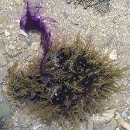
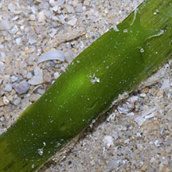
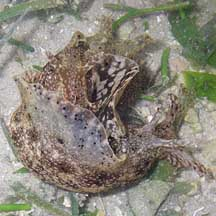
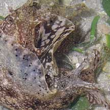
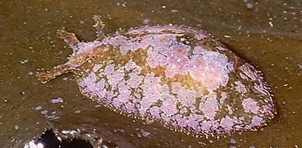
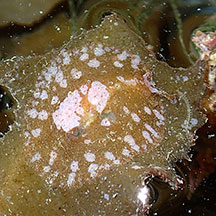
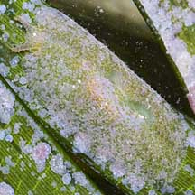

|
|
| sea hares text index | photo index |
| Phylum Mollusca > Class Gastropoda > sea slugs > Order Anaspidea |
| Sea
hares Order Anaspidea updated May 2020
Where seen? Among the largest sea slugs to be seen, sea hares may be commonly seen on our Northern and Southern shores in silty and sandy areas near seagrasses and with seaweeds. However, they appear to be seasonal. Sometimes they are everywhere, at other times, none are to be seen. What are sea hares? Sea hares are molluscs. They belong to Phylum Mollusca and Class Gastropoda like snails. Like many other sea slugs (Subclass Opistobranchia), sea hares lack external shells as adults. Sea hares belong to Order Anaspidea and are NOT nudibranchs, which belong to a different Order Nudibranchia. Features: Sea hares can be quite large with reports of animals elsewhere reaching 60cm long and weighing 5kgs! Others can be super tiny. Sea hares have two pairs of tentacles. The front pair (called oral tentacles) are next to the mouth and usually large and fleshy, sometimes with flaps. The second pair (called rhinophores) is further behind on top of the 'head' and usually smaller. The tentacles are made up of rolled tubes containing chemical sensors. Some have tiny simple eyes at the base of the rhinophores. Sea hares have a pair of 'wings' or flaps (called parapodia) that cover the centre part of the body. Some sea hares can swim by flapping their parapodia. |
 Two pairs of tentacles Changi, Jun 05 |
 A pair of flaps cover the body, thin internal shell. Changi, Jun 07 |
 Swimming sea hare! Cyrene Reef, Nov 11 |
| Like other gastropods, most sea hares have a shell, but this is reduced,
thin and just under the skin. These internal shells may be made of
calcium or a horn-like material. Some sea hares lack internal shells.
The shell encloses the gills and the heart. The body wall (called
the mantle) has openings or a siphon to pump water in and out over
the gills. Sometimes confused with other sea slugs that appear similar but belong to different orders. Here's more on how to tell apart sea hares from other sea slugs. You are what you eat: Sea hares eat seaweed and algae. They often match their food, in colour and sometimes, texture as well! Why are they called hares? It's not really certain, but sea hares do move rather quickly, for a slug! With some imagination, the tentacles on their head do resemble the ears of a rabbit. Also, they are herbivores, eating seaweed. |
 Some release a purple dye when disturbed Pulau Sekudu, Apr 05 |
 Often seen half buried in soft ground. Changi, Apr 12 |
 This tiny sea hare is perfectly camouflaged on a seagrass blade. St. John's Island, Nov 12 |
| Hare dye: Some sea hares produce a purple dye when disturbed. The function of this dye is not known. Unlike an octopus or squid, it doesn't form a screen for a quick escape as most of these slugs usually don't move very fast. One study found that the dye irriates other animals such as crabs, sea urchins, fishes and bristleworms. It is believed that the dye is a by-product of the seaweeds that the sea hare eats. Some kinds of sea hares may have a gland that produces a white secretion. Sea hares may also store in their skin, distasteful and even toxic chemicals that they obtain from the seaweed that they eat. |
 Laying egg strings. Changi, Jun 05 |
 Cyrene Reef, Apr 10 |
 Photo shared by Toh Chay Hoon on her blog. |
| Hare today, gone tomorrow! Sea
hares do not live long as large, mature adults, rarely longer than
a year. They die soon after they reproduce. They are hermaphrodites,
each animal having both male and female reproductive organs. The male
organ appears on the neck, and the female opening is within the body
mantle. Some sea hares are said to form mating chains, each one acting
as male to the one in front of it and as a female to the one behind.
They lay eggs in strings or ribbons. There is often a seasonal abundance
of sea hares on our shores, with not a hare in sight in between. Human uses: It is said that some Pacific Islanders eat sea hares. Yet again, there are reports of dogs being poisoned after eating sea hares. It appears that the algae that the sea hares eat may be responsible for the toxins. Status and threats: None of our sea hares are listed among the threatened animals of Singapore. However, like other creatures of the intertidal zone, they are affected by human activities such as reclamation and pollution. Trampling by careless visitors can also have an impact on local populations. |
| Some Sea hares of Singapore |


 Wedge sea hare |

| Unidentified sea hares of Singapore |
 Petalifera sp.? on Sargassum. Small Sisters Island, Aug 20 Photo shared by Toh Chay Hoon on facebook. |
 Petalifera sp.? on Sargassum. Small Sisters Island, Aug 20 Photo shared by Toh Chay Hoon on facebook. |
 On Tape seagrass. Sentosa, Dec 10 |
| Order
Anaspidea recorded for Singapore from Tan Siong Kiat and Henrietta P. M. Woo, 2010 Preliminary Checklist of The Molluscs of Singapore. *from WORMS +our observation
|
Links
|